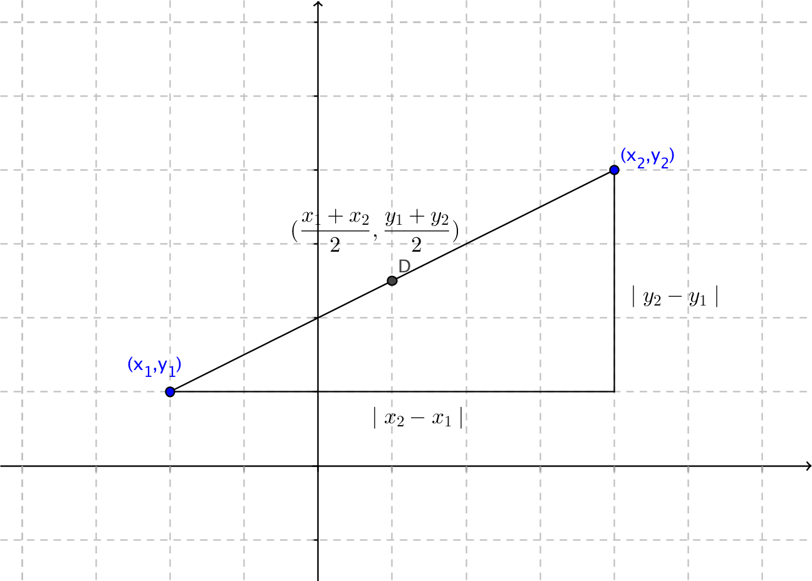

5. Mittpunkt av en sträcka
Mittpunkten för en sträcka mellan \( (x_1,y_1) \) och \( (x_2,y_2) \) får vi via \( (\dfrac{x_1+x_2}{2}, \dfrac{y_1+y_2}{2}) \).

Exempel 1 Bestäm punkten som befinner sig mitt emellan \( (-3,-2) \) och \( (4,0) \).
Lösning
Vi får x-koordinaten får vi som \( \dfrac{-3+4}{2}= \dfrac{1}{2} \) och y-koordinaten som \( \dfrac{-2+0}{2}=-1 \). Mittpunkten är \( (\dfrac{1}{2},-1) \) .
Exempel 2 Bestäm ändpunkten då vi vet att sträckan från \( (-4,-5) \) har en mittpunkt i \( (0,-3) \).
Lösning
Vi får ändpunktens x-koordinat via \( 0=\dfrac{-4+x}{2} \) som ger \( x=4 \) och \( y \)-koordinaten via \( -3=\dfrac{-5+y}{2} \) som \( y=-1 \). Ändpunkten är \( (4,-1) \) .
Uppgifter
- Bestäm mittpunkten för sträckan mellan
- (-1,-3) och (1,1).
\( (\dfrac{-1+1}{2}, \dfrac{-3+1}{2}) = (0,-1) \)
- (3,2) och (-1,2).
\( (\dfrac{3-1}{2}, \dfrac{2+2}{2}) = (1,2)
- (3,1) och (-1,-3).
\( (\dfrac{3+(-1)}{2}, \dfrac{1+(-3)}{2}) = (1,-1) \)
- (-1,-3) och (1,1).
- Bestäm ändpunkten och längden för sträckan som börjar i (-3,-2) och vars mittpunkt är i (-2,2).
Ändpunkten: \( (\dfrac{-3+x}{2}, \dfrac{-2+y}{2}) = (-2,2) \) som ger koordinaterna (-1,6). Längden \( \sqrt{(-3-(-1))^2+(-2-6)^2} = \sqrt{68}=2\sqrt{17} \).
- Bestäm arean av den kvadrat som uppstår då man halverar sidorna i kvadraten vars hörnpunkter är (-2,0), (1,1), (2,-2) och (-1,-3).
Bestäm mittpunten mellan två hörnpunkter, tex E =\( (\dfrac{-2+1}{2}, \dfrac{0+1}{2}) = (-\dfrac{1}{2},\dfrac{1}{2}) \) och H = \( (\dfrac{1+2}{2}, \dfrac{1+(-2)}{2}) = (\dfrac{3}{2},-\dfrac{1}{2}) \).
Avståndet EH är \( \sqrt{(-\dfrac{1}{2}-\dfrac{3}{2})^2+(\dfrac{1}{2}-(-\dfrac{1}{2}))^2} = \sqrt{5} \).
Arean är \( (\sqrt{5})^2=5 \).